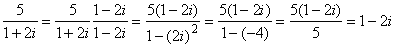

Investigating Gaussian Integers
Problem 153
As we all know the equation x2=-1 has no solutions for real x.
If we however introduce the imaginary number i this equation has two solutions: x=i and x=-i.
If we go a step further the equation (x-3)2=-4 has two complex solutions: x=3+2i and x=3-2i.
x=3+2i and x=3-2i are called each others' complex conjugate.
Numbers of the form a+bi are called complex numbers.
In general a+bi and a−bi are each other's complex conjugate.
A Gaussian Integer is a complex number a+bi such that both a and b are integers.
The regular integers are also Gaussian integers (with b=0).
To distinguish them from Gaussian integers with b ≠ 0 we call such integers "rational integers."
A Gaussian integer is called a divisor of a rational integer n if the result is also a Gaussian integer.
If for example we divide 5 by 1+2i we can simplify  in the following manner:
in the following manner:
Multiply numerator and denominator by the complex conjugate of 1+2i: 1−2i.
The result is
.
So 1+2i is a divisor of 5.
Note that 1+i is not a divisor of 5 because  .
.
Note also that if the Gaussian Integer (a+bi) is a divisor of a rational integer n, then its complex conjugate (a−bi) is also a divisor of n.
In fact, 5 has six divisors such that the real part is positive: {1, 1 + 2i, 1 − 2i, 2 + i, 2 − i, 5}.
The following is a table of all of the divisors for the first five positive rational integers:
| n | Gaussian integer divisors with positive real part |
Sum s(n) of these divisors |
| 1 | 1 | 1 |
| 2 | 1, 1+i, 1-i, 2 | 5 |
| 3 | 1, 3 | 4 |
| 4 | 1, 1+i, 1-i, 2, 2+2i, 2-2i,4 | 13 |
| 5 | 1, 1+2i, 1-2i, 2+i, 2-i, 5 | 12 |
For divisors with positive real parts, then, we have:  .
.
For 1 ≤ n ≤ 105, ∑ s(n)=17924657155.
What is ∑ s(n) for 1 ≤ n ≤ 108?